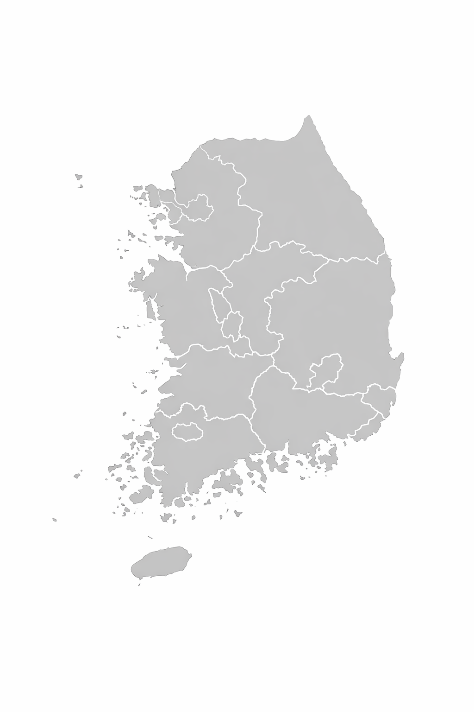

국가데이터처
Ministry of Data and Statistics
{{ report_info.year }}년 {{ report_info.quarter }}/4분기
지역경제동향
{% for indicator in indicators %}
{{ indicator.icon }}
{{ indicator.name }}
{{ indicator.unit }}
상위
{% for region in indicator.top_regions %}
{{ region.name }}
{{ region.value }}
▲
{% endfor %}
하위
{% for region in indicator.bottom_regions %}
{{ region.name }}
{{ region.value }}
▼
{% endfor %}

전국
{{ indicator.nationwide_value }}{% if indicator.nationwide_change >= 0 %}▲{% else %}▼{% endif %}
{% if indicator.name == '소비자물가' %}
전국 평균
평균 초과
평균 미만
{% elif indicator.name == '고용률' %}
상승
하락
보합
{% else %}
증가
감소
{% endif %}
{% endfor %}